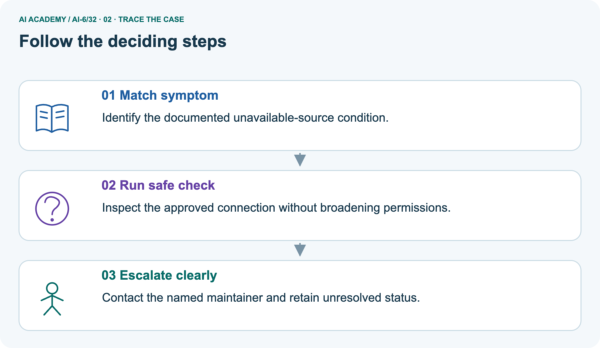
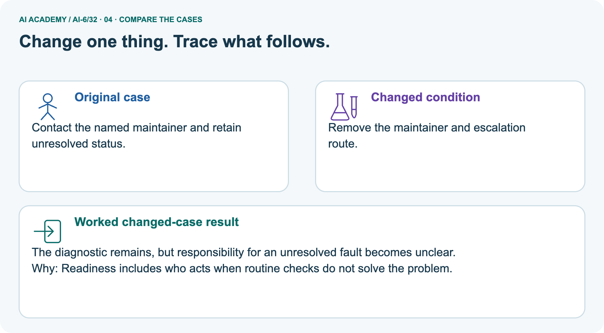
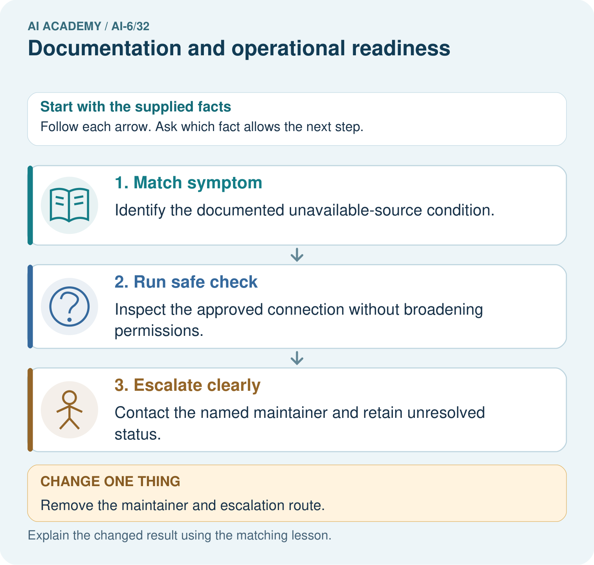
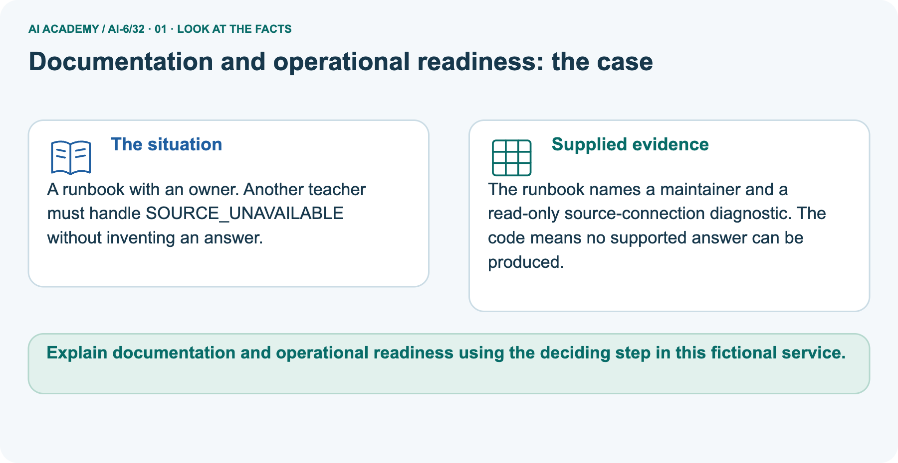
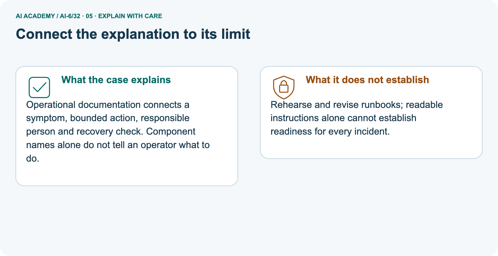
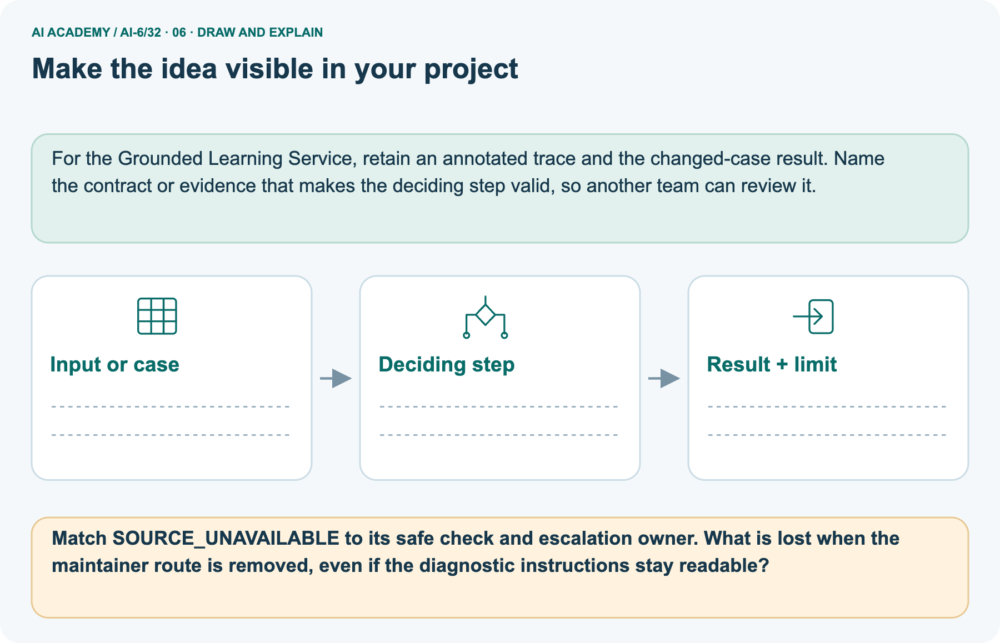

AI Academy · Level 6 · Grade 11 · Week 32 · Student lesson
Documentation and operational readiness
Learn to understand, design, build, test and explain AI systems responsibly.
Project: Grounded Learning Service
THE CONNECTED WEEK
Name the versions. Show the checks. Rehearse the fallback.
Write a complete fictional runbook and distinguish instructions from performed operational evidence.
Keep one habit: Runbook reference → missing-step ledger → unavailable-source picture → readiness probes → F1 rehearsal → independent operation gaps.
Main lesson · Section 1
Write a runbook another person can rehearse honestly
Setup, verification, ownership and compatible recovery belong in one record.
Learning goals
I can explain the mechanism and terminology of documentation and operational readiness.
I can apply the stated procedure to a new case with a traceable result.
I can identify an assumption or limitation and design a revealing follow-up.
Retrieve versions, incidents and reviewer ownership
Close your notes first. A rough first answer helps us choose the right starting point; it is not a score for your ability.
Without opening the old lesson, explain one key idea from Red team exercises. Give an example and a mistake that the idea helps you avoid.
Without opening the old lesson, explain one key idea from Performance and cost experiments. Give an example and a mistake that the idea helps you avoid.
Without opening the old lesson, explain one key idea from Incident investigation. Give an example and a mistake that the idea helps you avoid.
After trying, check the relevant lesson or ask your teacher. Change the part of your explanation that the evidence shows was wrong.
Prerequisite and starting response
Recall Red team exercises. Explain why a recorded result needs its input conditions and evidence source before it can support a claim.
End goal
Explain documentation and operational readiness using the deciding step in this fictional service.
Earlier wording, alternatives and picture transcripts
Your learning target
Remember before reading
This week you will practise:
Explain the mechanism and terminology of documentation and operational readiness
Apply the stated procedure to a new case with a traceable result
Identify an assumption or limitation and design a revealing follow-up
Retrieve what you already know
This week’s end goal
Main lesson · Section 2
Define exact inputs, expected checks and operational limits
Do not publish secrets to make an incomplete guide appear reproducible.
Begin with the incomplete “start the service” note
Imagine handing a school helper a note that says only “start the service.” Which version, which records and which result should they expect? What if the source is unavailable? A runbook should let another person reproduce the permitted checks, recognize a problem and follow a bounded fallback. Writing clear steps is preparation; only a recorded rehearsal shows what another operator actually managed to do.
Define operational documentation
Operational documentation tells another person how to run, verify, observe and recover the service. A successful developer demo is not readiness.
Complete fictional runbook reference
| Runbook element | Complete fictional rehearsal reference |
|---|---|
| Reviewed combination | Service code toy-r2, config cfg 2, corpus c1, procedure p2, schema 1, fixture F1 |
| Non-secret config | ENV=classroom-mock; DATA_VERSION=c1; read-only source card F1 |
| Secret names, never values | SESSION_KEY is a name-only documentation example; paper mock requires no secret |
| Preparation | Copy supplied F1 card below; record versions; make no external connection |
| Healthy F1 card | Approved room B12; corpus c1; source_available=true |
| Verification | Check versions and card availability; expected supported fixture answer B12 with source F1/c1 |
| Unavailable variant | source_available=false; expected SOURCE_UNAVAILABLE and needs_review, no invented room |
| Owner and route | Symbolic maintainer role; prepare incident packet for approved internal route, not an actual message |
| Fallback | Keep unsupported request unresolved; do not broaden credentials or use an unapproved source |
| Recovery dependencies | Reviewed toy-r1 reads schema 1/c1 only; check current schema/version before a proposed rollback |
| Rehearsal status | Not run unless an actual partner follows the instructions; paper self-trace is labelled separately |
Name supplied and missing evidence
Earlier wording, alternatives and picture transcripts
Begin by writing the question the procedure is intended to answer. Identify the information already supplied, the information it will produce and the information still missing.
These are constructed classroom examples; they do not require live accounts, private records or an external service. Do not treat a plausible explanation as a measured outcome.
Main lesson · Section 3
Trace each documentation gap to an operational decision
A component list does not explain what to check or what to do next.
Original runbook coverage rule
A runbook names versions, required non-secret configuration, secret key names, health checks, release/rollback dependencies, alerts and owners. Test it with a fresh operator and fictional fixtures.
Complete setup-gap and repair ledger
| Missing from the main setup-only note | Why another operator needs it | Concrete supplied repair |
|---|---|---|
| Code/config/data versions | Otherwise two operators may use different evidence | toy-r2 / cfg 2 / c1 / p2 / schema 1 / F1 |
| Fixture and expected result | Cannot distinguish start-up from supported service behavior | F1 approved B12; record source F1/c1 |
| Unavailable-source check | Cannot know honest failure behavior | SOURCE_UNAVAILABLE → needs_review, no unsupported room |
| Owner and permitted route | Readable diagnostics alone leave unresolved responsibility | Named symbolic maintainer and prepared incident packet |
| Compatible recovery conditions | Old code may not read current data | Check toy-r1 supports current schema 1/c1; schema 2 would block |
| Actual rehearsal record | A developer demo is not another operator’s successful use | Record performed/not run, first confusion, evidence and revision |
State what a fresh operator still needs
Before applying the procedure, write its units, denominator or decision boundary where relevant. A partner should be able to repeat each step using the same inputs.
If a required input is absent or violates the stated contract, record that condition explicitly instead of quietly replacing it with a convenient value.
Explain the visual
Point to the input, the deciding step and the result in this week’s visual. Explain the same step in ordinary words. A picture helps when you can say what each part represents.
Earlier wording, alternatives and picture transcripts
Documentation and operational readiness — evidence trace
Connect the picture and the explanation
Main lesson · Section 4
Predict a readable diagnostic with no owner
Removing the route breaks responsibility without changing the symptom.
Current task and response
Runbook says start server, but omits data version and recovery steps. Another operator cannot reproduce a result. Show the intermediate steps and give the conclusion with its scope.
Predict the missing-maintainer change
Change: Remove the maintainer and escalation route.
Check after predicting
Prediction: The diagnostic remains, but responsibility for an unresolved fault becomes unclear.
Reason: Readiness includes who acts when routine checks do not solve the problem.
Earlier wording, alternatives and picture transcripts
Compare a familiar case with a changed case
Change one thing in the pictured case
Main lesson · Section 6
Read symptom, bounded check, owner and recovery evidence together
A clear error message without a responsible route leaves the workflow incomplete.
Main setup-only runbook and checked repair
Runbook says start server, but omits data version and recovery steps. Another operator cannot reproduce a result.
Add exact configuration/version references, fixture setup, verification and recovery. Do not publish secret values to make setup easier.
Compare the intermediate evidence with the final statement. Explain why each number or decision follows from the stated inputs. The conclusion belongs to this scenario and procedure; changing the inputs, evaluation population or authority can change what it establishes. Retain only authorized, minimized operational evidence without secret values or unnecessary private content so a later revision can be compared honestly.
Separate unavailable-source inputs and scope
A runbook with an owner. Another teacher must handle SOURCE_UNAVAILABLE without inventing an answer.
The runbook names a maintainer and a read-only source-connection diagnostic. The code means no supported answer can be produced.
The picture focuses on SOURCE_UNAVAILABLE. Under this fictional contract the unavailable source means no supported answer can be produced; keep needs_review rather than guess. The documented read-only check inspects only the approved source connection/configuration, without granting broader permissions.
The named maintainer and authorized route give the unresolved incident an owner; actual contact must be separately performed and recorded. Removing them leaves readable diagnostic steps but no complete responsibility/escalation path. It does not authorize the operator to invent a new owner, secret or answer. A later recovery still needs its own verification against the recorded versions.
Trace symptom, permitted check and named owner



Read the picture one step at a time
Operational documentation connects a symptom, bounded action, responsible person and recovery check. Component names alone do not tell an operator what to do.
Predict removal of owner and route
Change one thing: Remove the maintainer and escalation route. Predict the result before checking the explanation. What remains the same?
Check after predicting



Explain rehearsal limits and lost responsibility
Rehearse and revise runbooks; readable instructions alone cannot establish readiness for every incident.
Read the labelled picture: Match SOURCE_UNAVAILABLE to its safe check and escalation owner. What is lost when the maintainer route is removed, even if the diagnostic instructions stay readable?
Earlier wording, alternatives and picture transcripts
Learn from the worked case
Cover the result before checking it. Say what is given, choose the procedure, and follow one step at a time. Then uncover the result and explain your first mismatch. Ask why a step is allowed, not only what number it produces.
A pictorial worked case: Documentation and operational readiness
The facts we will use



Why this result follows
What this example does not establish
Main lesson · Section 7
Audit reproducibility and operation beyond the happy-path demo
Keep document completeness separate from performed rehearsal evidence.
Core readiness qualification and failure analysis
Documentation readiness requires a tested replay and operational ownership, not merely complete-looking prose.
A useful check asks what would make the reasoning fail. Distinguish a failure to execute the declared procedure from a weakness in the procedure itself.
The first may require a correction; the second requires an explicitly revised method and new evidence. Preserve unsuccessful cases so an improved result cannot hide the original problem.
Complete version, fallback and rehearsal probes
| Readiness probe | Expected interpretation |
|---|---|
| Service starts but data version absent | Reproducibility incomplete |
| Secret values pasted into guide | Remove values; document names and approved acquisition process separately |
| Healthy card gives B12 with F1/c1 evidence | Passes that fictional check only |
| Unavailable source yields guessed room | Fails supported-answer fallback |
| Diagnostic readable but owner absent | Escalation responsibility missing |
| Old recovery reader cannot read current schema | Block incompatible proposal; use separately tested compatible plan |
| Developer says it worked | Not evidence another operator completed the runbook |
| Partner unavailable | Record self-trace or not run; do not invent rehearsal sign-off |
| Runbook rehearsed on F1 | Scoped evidence, not readiness for every incident |
Guided repair and explanation
A report omits this qualification: Documentation readiness requires a tested replay and operational ownership, not merely complete-looking prose.
Explain how omitting it could change a reader's interpretation, and write an accurate replacement.
Earlier wording, alternatives and picture transcripts
Locate the earliest unsupported step
Main lesson · Section 8
Practise turning a symptom into a bounded operator step
Name expected evidence, owner and fallback.
Current explanation and guided check
Explain the weekly mechanism in your own words. Use the worked scenario to name its input, decision rule and output.
Supported W2 trace
Use workbook W2 for the connected example “Documentation and operational readiness”. First fill the input and rule boxes. Try the middle steps before asking for a hint. After a hint, try the next step yourself.
| Plan | Do | Check |
|---|---|---|
| What is given? Which rule or procedure applies? | Record each intermediate step. | Does the result follow? What remains unknown? |
Explain your trace to a partner. Your partner points to one step to check. Swap roles on the next case. Each person writes their own explanation.
Individual scope check
Use the worked case for Documentation and operational readiness. Proposed explanation: “The worked result establishes every future case”. Decide whether this explanation is supported.
Point to the step or supplied fact that decides; explain your repair if needed.
Answer on your own before discussion. If you are unsure, say which step you need help with.
Picture response
Match SOURCE_UNAVAILABLE to its safe check and escalation owner. What is lost when the maintainer route is removed, even if the diagnostic instructions stay readable?
Reserve the selected setup-only readiness case
This is supported practice. Keep the separately named independent case for an attempt before feedback.
Earlier wording, alternatives and picture transcripts
Practise with less help: Trace the worked case
Check your reasoning
Explain the picture
Main lesson · Section 9
Rehearse the complete fictional runbook from verification to recovery review
Use the supplied F1 card and keep expected outcomes separate from observations.
Current incomplete-runbook investigation
Runbook says start server, but omits data version and recovery steps. Another operator cannot reproduce a result. Show the intermediate steps and give the conclusion with its scope.
Complete preparation and rehearsal protocol
| Complete classroom rehearsal step | Expected result and evidence record |
|---|---|
| 1. Identify the supplied combination | Copy toy-r2/cfg 2/c1/p2/schema 1/F1; record paper mock rather than live deployment |
| 2. Prepare F1 | Write approved B12, c1, source_available=true on a fictional card; no secrets needed |
| 3. Follow healthy verification | Expected B12 supported by F1/c1; record actual partner explanation or paper trace |
| 4. Flip source_available=false | Expected SOURCE_UNAVAILABLE + needs_review; no guessed room |
| 5. Follow bounded diagnostic | Check only supplied source/version/availability fields; prepare minimized incident packet |
| 6. Identify maintainer and route | Record symbolic owner; do not claim message delivery or a human decision |
| 7. Inspect proposed toy-r1 recovery | Only compatible with current schema 1/c1; schema 2 variant blocks; no actual rollback executed |
| 8. Record rehearsal status honestly | Partner rehearsal performed / self-trace / not run, first confusing instruction, revision and remaining checks |
Evidence status and no-live-operation scope
This is a complete paper/mock runbook rehearsal, not a command to launch or deploy a service. Give the supplied card and steps to a partner if one is available, without silently filling gaps for them. Record their actual first confusion and outcome; if working alone, label a self-trace and leave fresh-operator rehearsal not run.
The healthy/unavailable and schema-compatibility outcomes are expected fixture results, not observed production status. No secrets, real source connections, messages or rollback are needed.
Evidence ledger and reflection
| Record | Your evidence |
|---|---|
| Given input and fixed rule | |
| Prediction before checking | |
| Actual result, or “not run” | |
| First mismatch and one explanation | |
| Boundary or missing input and expected response |
On paper, trace the supplied procedure. If code is provided, predict before running it in a local practice file. Never write an expected answer as though it were an observed run.
Before trying: what do I expect, and why? While trying: which step could first go wrong? Afterwards: what did I actually observe, and what should change? Keep “not run” if you only traced the procedure.
Earlier wording, alternatives and picture transcripts
Predict, investigate and preserve the evidence
Plan → try → check
Main lesson · Section 14
Try alone: setup complete, operation and recovery incomplete
Identify what another operator still cannot decide safely.
Complete selected independent task
Documentation includes all setup steps but no incident owner or compatible rollback. Identify readiness gaps.
First attempt and support record
Attempt this case before feedback. Record any help. Earlier examples below are further practice; a case already practised with feedback cannot establish fresh transfer.
Feedback after trying
Attempt the independent case before hints. Record whether you worked alone, used a hint or followed a model. After feedback, fix the first unsupported step and explain why it changed.
A later check uses a changed case, not a copied answer.
Earlier wording, alternatives and picture transcripts
Independent case: Apply a new case independently
Attempt this without hints
Documentation includes all setup steps but no incident owner or compatible rollback. Identify readiness gaps.
Record support used: none, hint or teacher explanation. After feedback, a different case is needed to demonstrate independence.
Use feedback to improve
Main lesson · Section 11
Save the runbook revision and actual rehearsal evidence
Keep missing checks and unresolved owner/recovery gaps visible.
Project task and artifact
Add a labelled documentation and operational readiness evidence sheet to Grounded Learning Service. Show how you can explain the mechanism and terminology of documentation and operational readiness.
Use the supplied fictional case and keep its inputs, intermediate steps, calculation or prediction, and limitation. Connect this record to last week’s record; a matching answer without a trace is insufficient.
| Project evidence | Record |
|---|---|
| Component and version | |
| Inputs permitted at prediction time | |
| Trace and comparison with earlier work | |
| Failure, limit and human review |
Actual partner rehearsal or self-trace and limitations
For the Grounded Learning Service, retain an annotated trace and the changed-case result. Name the contract or evidence that makes the deciding step valid, so another team can review it.
Earlier wording, alternatives and picture transcripts
Evidence for your project
Main lesson · Section 16
Explain what the runbook enables and what was actually rehearsed
A clear document is preparation rather than universal readiness evidence.
Retrieve and explain
Close your notes. Explain this goal in your own words: Explain the mechanism and terminology of documentation and operational readiness
Plan a changed-case return
If you are unsure, return to the worked picture and explain one arrow. If you are ready, change an input or assumption and justify your prediction.
Save your workbook evidence. At the next review, try a different case before opening your old answer.
Reference bank and extra practice
Choose the reference that helps your next step.
Reference · Use service vocabulary precisely
Reference · Section 5
Reference · Use service vocabulary precisely
Connect each term to an input, operation, evidence source or outcome.
Vocabulary and your explanation
| Word | Meaning |
|---|---|
| Runbook | Instructions for operating and recovering a service |
| Health check | A defined observation of service state |
| Operational owner | The actor responsible for ongoing decisions |
Extra challenge · Explain a stronger case
Reference · Section 10
Extra challenge · Explain a stronger case
Choose the next challenge after the main route.
Explain,repair and extend
Explain the weekly mechanism in your own words. Use the worked scenario to name its input, decision rule and output.
A report omits this qualification: Documentation readiness requires a tested replay and operational ownership, not merely complete-looking prose.
Explain how omitting it could change a reader's interpretation, and write an accurate replacement.
For the worked scenario, propose one additional case that could reveal a failure, describe its expected outcome before running it, and explain what would need to remain fixed for a fair comparison.
Do not reuse W4 as a new final test after receiving feedback.
Explain → apply → challenge
Reference · Check the service reasoning and its limits
Reference · Section 12
Reference · Check the service reasoning and its limits
Use after practice; keep the selected independent case for its first attempt.
Current explanation and response
Complete the supported workbook tasks before attempting W4 independently. Record any hints or help used. After feedback, use the teacher's fresh retry rather than copying the earlier answer.
For a project, select a relevant new case, predict the outcome from the declared rule and preserve the result alongside any revision.
For the worked scenario, propose one additional case that could reveal a failure, describe its expected outcome before running it, and explain what would need to remain fixed for a fair comparison.
Do not reuse W4 as a new final test after receiving feedback.
Extra practice · Revisit the complete trace
Reference · Section 13
Extra practice · Revisit the complete trace
Predict before reading the supplied steps.
Complete trace and evidence
Complete evidence record
Documentation and operational readiness — evidence trace
Follow the input through the stated procedure to its result. Cover the result first, predict it, then explain every intermediate step. The text/table accompanies the figure so the example can be read without colour.
Reference · The earlier route checklist
Reference · Section 15
Reference · The earlier route checklist
Use one main route rather than repeating the lesson.
Targets,route and first prediction
Start with this question: A runbook with an owner. Another teacher must handle SOURCE_UNAVAILABLE without inventing an answer.
| By the end, I can | How I will show it |
|---|---|
| Explain the mechanism and terminology of documentation and operational readiness | Explain the deciding step, show a trace or test, and state one limit. |
| Apply the stated procedure to a new case with a traceable result | Explain the deciding step, show a trace or test, and state one limit. |
| Identify an assumption or limitation and design a revealing follow-up | Explain the deciding step, show a trace or test, and state one limit. |
Remember → watch and explain → try with help → investigate → try independently → keep project evidence. Your teacher may spread this lesson across several classes.
Keep your first prediction. Compare it with what the evidence shows and explain any change.
Extra practice · Predict,check and repair
Reference · Section 17
Extra practice · Predict,check and repair
Keep supported feedback separate from the independent case.
First supported question and optional hint
A runbook with an owner. Another teacher must handle SOURCE_UNAVAILABLE without inventing an answer.
Which labelled step matches this detail? Contact the named maintainer and retain unresolved status.
1. Match symptom
2. Escalate clearly
3. Run safe check
Hint if needed: Read the steps in the pictorial case. Match the supplied detail to the stage that performs or records it.
Practice 1: explain the deciding evidence
Check after the first attempt
After your attempt, compare with the supported explanation: Escalate clearly Contact the named maintainer and retain unresolved status.
Operational documentation connects a symptom, bounded action, responsible person and recovery check. Component names alone do not tell an operator what to do.
Changed-case question and optional hint
Changed-case practice: Remove the maintainer and escalation route. Which conclusion is supported by the supplied facts?
1. The diagnostic remains, but responsibility for an unresolved fault becomes unclear.
2. We can decide the result without examining the changed input or the procedure.
3. This one example guarantees correct results for every future input.
Hint if needed: Use the changed condition and the deciding step in the pictorial trace. The answer must say what follows from those facts.
Practice 2: explain the deciding evidence
Check after the changed attempt
After your attempt, compare with the supported explanation: The diagnostic remains, but responsibility for an unresolved fault becomes unclear. Readiness includes who acts when routine checks do not solve the problem.
Repair and retain the record
Review Red team exercises (ai-6/31). Goal: Explain the mechanism and terminology of red team exercises. Short practice: Distinguish the exhibit fact from the embedded edit instruction.
Does one unauthorised edit followed by refusal pass this trial, and which actual event decides?. Return to this week and explain what you changed.
Review Performance and cost experiments (ai-6/29). Goal: Explain the mechanism and terminology of performance and cost experiments. Short practice: Calculate per-case seconds and cost units for A and B.
Which meets a budget of at most 2 cost units per case, and what speed trade-off does that choice make?. Return to this week and explain what you changed.
Review Incident investigation (ai-6/26). Goal: Explain the mechanism and terminology of incident investigation. Short practice: Order the three incident records and locate the old evidence version.
How does the investigation change if the trace instead retrieves version 6 but drafts room C?. Return to this week and explain what you changed.
Use Download completed work in the hosted lesson to export your answers, reflections, practice feedback and code-run evidence. Open the HTML copy to read or print it.
Drafts stay in this browser when storage is available; clear drafts on a shared device.
Earlier wording, alternatives and picture transcripts
Use this supported practice once, in the browser or on paper. Keep the reserved independent assessment for a separate first attempt before teacher feedback.
Repair a missing building block
Keep your completed work
Reference · Six-picture concept journey
Reference · Section 18
Reference · Six-picture concept journey
Choose the picture that supports the current explanation.
01. Documentation and operational readiness: the case



A runbook with an owner. Another teacher must handle SOURCE_UNAVAILABLE without inventing an answer. Supplied facts: The runbook names a maintainer and a read-only source-connection diagnostic.
The code means no supported answer can be produced.
Point to the given fact that matters most. Explain why it matters.
02. Follow the deciding steps
Match symptom: Identify the documented unavailable-source condition. → Run safe check: Inspect the approved connection without broadening permissions. → Escalate clearly: Contact the named maintainer and retain unresolved status.
Point to each numbered stage and explain which recorded input it uses.
03. Documentation and operational readiness — evidence trace
![Documentation and operational readiness — evidence trace. Runbook says start server, but omits data version and recovery steps. Another operator cannot reproduce a result. | A runbook names versions, required non-secret configuration, secret key names, health checks, release/rollback dependencies, alerts and owners. Test it with a fresh operator and fictional fixtures. | Add exact configuration/version references, fixture setup, verification and recovery. Do not publish secret values to make setup easier.](../assets/academy-story-ai-6-32-03.png)

Documentation and operational readiness — evidence trace. Runbook says start server, but omits data version and recovery steps.
Another operator cannot reproduce a result. | A runbook names versions, required non-secret configuration, secret key names, health checks, release/rollback dependencies, alerts and owners.
Test it with a fresh operator and fictional fixtures. | Add exact configuration/version references, fixture setup, verification and recovery. Do not publish secret values to make setup easier.
Read the labels and values. Explain the relationship the model shows.
04. Change one thing. Trace what follows.
Original case: Contact the named maintainer and retain unresolved status. Changed condition: Remove the maintainer and escalation route.
Expected result: The diagnostic remains, but responsibility for an unresolved fault becomes unclear. Reason: Readiness includes who acts when routine checks do not solve the problem.
Predict before checking the worked changed-case result. Name what changed and what the supplied facts allow you to conclude.
05. Connect the explanation to its limit



Operational documentation connects a symptom, bounded action, responsible person and recovery check. Component names alone do not tell an operator what to do.
Limit: Rehearse and revise runbooks; readable instructions alone cannot establish readiness for every incident.
Explain the case, then point to a limit on the claim.
06. Make the idea visible in your project



For the Grounded Learning Service, retain an annotated trace and the changed-case result. Name the contract or evidence that makes the deciding step valid, so another team can review it.
Draw your input, deciding step, result and limit. Supported question: Match SOURCE_UNAVAILABLE to its safe check and escalation owner.
What is lost when the maintainer route is removed, even if the diagnostic instructions stay readable?
Draw your project trace and justify the deciding step using evidence.